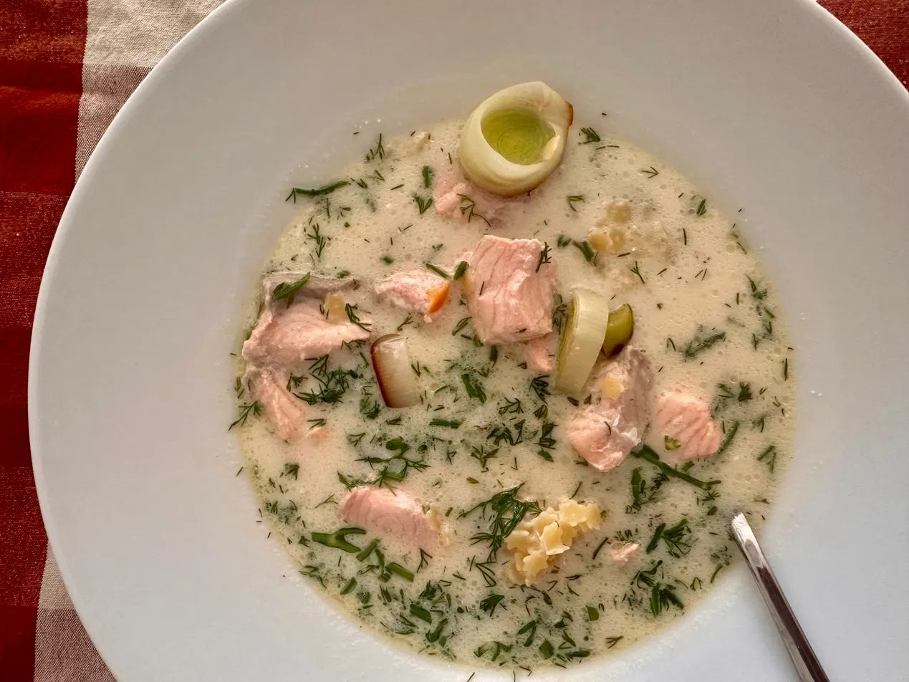

Sopa finlandesa de salmón
(lohikeitto)
Ingredientes
500 ml de caldo de pescado (casero o de brick)
15 g de mantequilla
1 puerro (solo la parte blanca), en rodajas
250 g de patata en dados (opcional)
200 g de salmón sin piel ni espinas, en dados
100 ml de nata para cocinar
2 granos de pimienta de Jamaica
½ hoja de laurel
1½ cucharadas de eneldo fresco picado
½ cucharadita de sal
Pimienta blanca, una pizca
Preparación
El caldo.
Si es
caldo casero
de morralla, cuécelo a fuego suave 20–25 minutos sin que hierva fuerte, quitando la espuma, y cuélalo con un colador fino. Para ahorrar tiempo vale un
brick de caldo de pescado
: queda igual de bueno.
Pochar el puerro.
En una olla, derrite la
mantequilla
y pocha el
puerro
a fuego medio-bajo unos 7 minutos, hasta que esté blando pero sin dorarse.
Cocer la patata.
Añade la
patata
, el
caldo
, la
pimienta de Jamaica
y el
laurel
. Cuece a fuego medio unos 15 minutos, hasta que la patata esté tierna. Si no pones patata, deja que el caldo se haga con el puerro 5 minutos y sigue.
La nata.
Echa la
nata
y deja que se caliente sin que llegue a hervir.
El salmón.
Añade el
salmón
y cuécelo a fuego muy suave unos 5 minutos, removiendo poco para que no se deshaga, hasta que esté justo hecho.
Ajustar y el eneldo.
Retira el laurel y sazona con
sal
y
pimienta blanca
. El
eneldo
va al final, ya fuera del fuego: espolvoréalo por encima justo antes de servir (si se cuece, pierde el aroma).
